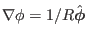
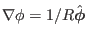
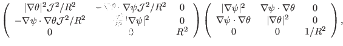

Next: Covariant and contravariant representation Up: Metric tensor for general Previous: Metric tensor for general
Suppose that
 are arbitrary general coordinates except
that
are arbitrary general coordinates except
that  is the usual toroidal angle in cylindrical coordinates. Then
 is perpendicular to both
is the usual toroidal angle in cylindrical coordinates. Then
 is perpendicular to both
 and
and
 . Using this, Eq. (152) is simplified to
. Using this, Eq. (152) is simplified to
|  | (168) |
yj 2018-03-09